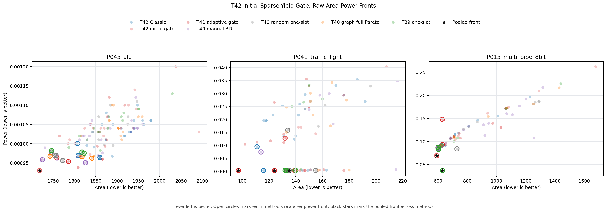

| Method | Problem | Valid PPA | Method front | Pooled front | Best score |
|---|---|---|---|---|---|
| T42 Classic | Prob045_alu | 31 | 5 | 0 | 0.393031079572 |
| T42 Classic | Prob041_traffic_light | 27 | 4 | 2 | 0.436180706851 |
| T42 Classic | Prob015_multi_pipe_8bit | 13 | 1 | 0 | 0.0379114142262 |
| T42 initial gate | Prob045_alu | 17 | 1 | 1 | 0.406419278533 |
| T42 initial gate | Prob041_traffic_light | 16 | 2 | 0 | 0.391092955701 |
| T42 initial gate | Prob015_multi_pipe_8bit | 15 | 1 | 1 | 0.116396797189 |
| T41 adaptive gate | Prob045_alu | 19 | 2 | 0 | 0.400330277942 |
| T41 adaptive gate | Prob041_traffic_light | 20 | 7 | 7 | 0.473631082062 |
| T41 adaptive gate | Prob015_multi_pipe_8bit | 13 | 2 | 0 | -0.00037766206488 |
| T40 manual BD | Prob045_alu | 28 | 2 | 0 | 0.405438530784 |
| T40 manual BD | Prob041_traffic_light | 18 | 11 | 0 | 0.399898934883 |
| T40 manual BD | Prob015_multi_pipe_8bit | 17 | 1 | 0 | 0.0716892765037 |
| T40 random one-slot | Prob045_alu | 14 | 4 | 0 | 0.402233983836 |
| T40 random one-slot | Prob041_traffic_light | 11 | 5 | 0 | 0.398740619705 |
| T40 random one-slot | Prob015_multi_pipe_8bit | 16 | 4 | 0 | 0.0271721388865 |
| T40 graph full Pareto | Prob045_alu | 20 | 3 | 0 | 0.402715585781 |
| T40 graph full Pareto | Prob041_traffic_light | 13 | 1 | 0 | 0.4030634229 |
| T40 graph full Pareto | Prob015_multi_pipe_8bit | 11 | 1 | 0 | 0.0527945329906 |
| T39 one-slot | Prob045_alu | 18 | 3 | 0 | 0.402072475195 |
| T39 one-slot | Prob041_traffic_light | 15 | 3 | 0 | 0.40382050351 |
| T39 one-slot | Prob015_multi_pipe_8bit | 11 | 5 | 1 | 0.2222851659 |